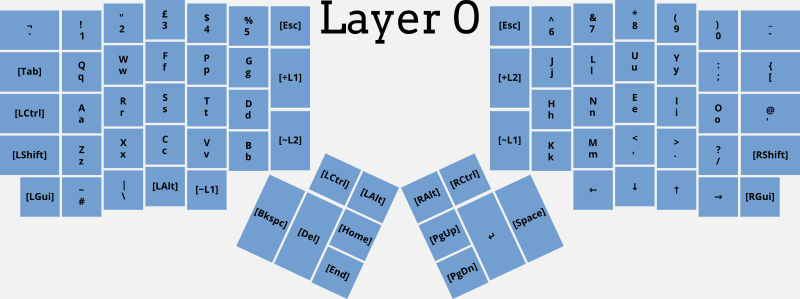
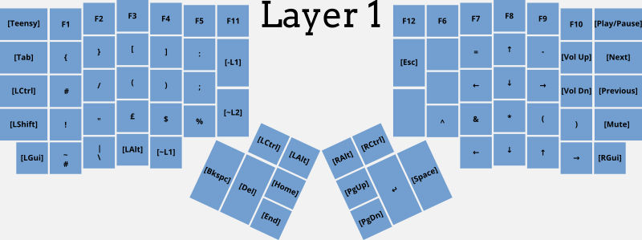
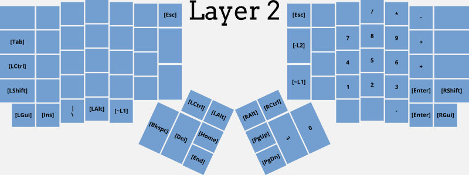

<!DOCTYPE html>
<html lang="en-US">

<head>
    <meta charset="utf-8">
    <meta http-equiv="X-UA-Compatible" content="chrome=1">
    <meta name="HandheldFriendly" content="True">
    <meta name="MobileOptimized" content="320">
    <meta name="viewport" content="width=device-width, initial-scale=1.0">
    <meta name="referrer" content="no-referrer">
    
    <meta name="description" content="The homepage of Paul Strickland">
    
    <meta name="twitter:card" content="summary">
    <meta name="twitter:domain" content="https://pestrickland.co.uk/">
    
    <meta name="twitter:image" content="https://pestrickland.co.uk/tn.png">
    <meta name="twitter:title" property="og:title" itemprop="title name" content="Paul Strickland">
    <meta name="twitter:description" property="og:description" itemprop="description" content="The homepage of Paul Strickland">
    <meta name="og:type" content="website">
    <meta name="og:url" content="https://pestrickland.co.uk/">
    <meta name="og:image" itemprop="image primaryImageOfPage" content="https://pestrickland.co.uk/tn.png">
    
    <title>The ErgoDox keyboard</title>
    <link rel="shortcut icon" href="https://pestrickland.co.uk/sam.ico" id="favicon">
    <link rel="stylesheet" href="https://pestrickland.co.uk/css/style.css">
    
    <link rel="stylesheet" href="https://fonts.googleapis.com/css?family=Didact+Gothic">
    
    <script src="https://code.jquery.com/jquery-3.2.1.min.js" integrity="sha256-hwg4gsxgFZhOsEEamdOYGBf13FyQuiTwlAQgxVSNgt4="
        crossorigin="anonymous"></script>
    
    
    <script async src="https://www.googletagmanager.com/gtag/js?id=UA-29767888-1"></script>
    <script>
        window.dataLayer = window.dataLayer || [];
        function gtag() { dataLayer.push(arguments); }
        gtag('js', new Date());

        gtag('config', 'UA-29767888-1');
    </script>
    

</head>

</html>
<body><div class="wrap"><div class="section" id="title">The ErgoDox keyboard</div><div class="section" id="content">2016-01-25 &#183; 1639 words

<div class="tag-container"><span class="tag"><a href="https://pestrickland.co.uk/tags/ergonomics">Ergonomics</a></span><span class="tag"><a href="https://pestrickland.co.uk/tags/keyboard">Keyboard</a></span></div><hr/>

<p>I built an <a href="https://deskthority.net/wiki/ErgoDox">ErgoDox</a> keyboard in 2013 from a kit sold by <a href="https://www.massdrop.com/">MassDrop</a>. It was
designed as a split ergonomic keyboard that is highly customisable. There&rsquo;s a
lot written about it on the internet that I can&rsquo;t usefully add to, but these
two posts were particularly useful to me:</p>

<ul>
<li><a href="https://jjt.io/2013/11/25/why-any-developer-should-check-out-the-ergodox-keyboard/">The ErgoDox keyboard a year in, and why you should get one</a></li>
<li><a href="https://web.archive.org/web/20170712024740/http://hairysun.com/blog/2013/04/02/oh-ergonomic-keyboard/">Oh (Ergonomic) Keyboard, Where Art Thou? (archive)</a></li>
</ul>

<p>After spending a weekend building the keyboard and a few weeks learning how to
program it and trying to type on it, it spent a long time being neglected. A
few months ago I decided to dust off the keyboard and practise with it more.
This post documents some of that experience.</p>

<h2 id="motivation">Motivation</h2>

<p>At work, I spend the vast majority of my day sat down, and any value I add is delivered through my fingers into a keyboard. Then, when I go home I often do the same: whatever personal project I decide to work on, there is usually a computer involved in some way.</p>

<p>So far in my eight-year career I&rsquo;ve not suffered from any repetitive strain injuries and my eyesight is still very good with no need for glasses. Looking ahead, however, I started to see the importance of ergonomics in all aspects of my life. The keyboard, therefore, plays an important role in this.</p>

<h2 id="learning-to-type">Learning to type</h2>

<p>I had no formal typing training as I grew up. Years spent at a keyboard led to what I&rsquo;d describe as an <em>unstructured</em> approach to typing, where my hands float over the keyboard. It&rsquo;s fast but I suspect quite error-prone.</p>

<h3 id="the-musical-instrument-approach">The musical instrument approach</h3>

<p>I read a couple of accounts that described moving to a split keyboard as learning a new musical instrument: that it wasn&rsquo;t necessary to unlearn one in order to learn the other. This was important to me as I couldn&rsquo;t guarantee being able to move 100% to a new keyboard.</p>

<p>In addition to the new keyboard, I also decided to try a new layout. With the exception of it being the layout that most people type with, QWERTY doesn&rsquo;t have a lot of positive features. I chose to try the <a href="https://colemak.com/">Colemak</a> layout, modified slightly to fit the reduced number of keys available on the ErgoDox and also to add UK-specific keys (e.g. <em>£</em> above <em>3</em> and <em>@</em> above <em>&lsquo;</em>).</p>

<p>The combination of a new keyboard <em>and</em> a new layout was a good choice to make for me. It gives clear distinction between the two keyboards: when I&rsquo;m on a standard keyboard, a laptop or phone screen, my fingers default to normal behaviour. When they are effectively constrained to the home row of the less familiar ErgoDox, the different key layout seems to reinforce the fact that this is a different way of typing.</p>

<h3 id="fatigue-leads-to-frustration">Fatigue leads to frustration</h3>

<p>I started learning to type on the ErgoDox by using a typing tutor. When the location of the keys is completely unknown this is a good way to develop new muscle memory. However, there was a limited amount of time I could spend typing meaningless letters before I got tired and fed up of making mistakes.</p>

<p>Once I knew roughly where the keys were, I found trying to type actual words much more rewarding. There was less time spent thinking about where my fingers were and more spent focusing on what I actually wanted to type. This still has its limitations, and at the moment I find that periods of about two hours are a maximum before I need to switch back to a standard keyboard.</p>

<h2 id="typing-is-slow-when-you-have-to-think-about-it">Typing is slow when you have to think about it</h2>

<p>Typing on a normal keyboard is quite quick for me. What I didn&rsquo;t realise until I started typing on the new keyboard was how little I had to think about what I was doing. It&rsquo;s almost as if my fingers know how to spell.</p>

<p>With the new keyboard at the moment, there is a definite lag between thinking of what to type and it appearing on screen. Whereas with a standard keyboard I would just have to think of typing something like &ldquo;approximate&rdquo; and the word would be produced by my fingers, on the new keyboard there is a process like this:</p>

<ol>
<li>Work out how to spell the word and what the first letter is</li>
<li>Think where the letter is on the keyboard</li>
<li>Work out which finger of which hand is required</li>
<li>Check if the finger needs to change row</li>
<li>Press the key</li>
<li>Check the result. If correct go back to step 1; if incorrect find backspace and try again</li>
</ol>

<p>This process is slow and can get frustrating when the mistakes are frequent. However, even though I am still slow and make a lot of mistakes, there are signs of improvement as my fingers appear to learn. The home row of the right hand, for example (where the letters <em>h</em>, <em>n</em>, <em>e</em>, <em>i</em> and <em>o</em> and the <em>&lsquo;</em> character are) is used a lot and I&rsquo;ll often observe rapid sequences of key strokes occurring without much conscious thought.</p>

<h3 id="slow-isn-t-as-bad-as-it-first-seems">Slow isn&rsquo;t as bad as it first seems</h3>

<p>Although I&rsquo;m improving, typing on my ErgoDox is still slower than a standard keyboard. With the exception of it being occasionally frustrating, it&rsquo;s actually a pleasant experience regardless. I certainly don&rsquo;t move my fingers around or stretch them as much as on a standard keyboard, but I also find that the rhythm of typing is very pleasant. This is no doubt made more prominent by the Cherry MX Blue switches, which, as well as having good tactile feedback, are also audibly &ldquo;<a href="https://www.keyboardco.com/blog/index.php/2012/12/an-introduction-to-cherry-mx-mechanical-switches/">clicky</a>&rdquo;. As a result, typing on the keyboard is quite a nice sensory experience for me.</p>

<h2 id="developing-layers-and-layouts">Developing layers and layouts</h2>

<p>One of the great things about this keyboard is its flexibility for key layouts and layers. I started with Colemak as described above. On this layer I also have layer toggles and switches. Toggles switch layer as long as the key is held down (like the Shift key of a standard keyboard), whereas switching layers requires another key to be pressed to return to the previous layer (as with the Caps Lock key).</p>


<figure>
    
        
    
    
    <figcaption>
        <p>
        Layer 0, the main layer of my keyboard
        
            
        
        </p> 
    </figcaption>
    
</figure>


<p>The thumb cluster is probably a bit neglected at the moment. The most used of these keys are Space and Backspace, followed by Return and Delete. The other keys are less accessible without moving my hand but could probably be put to a better use than they are currently.</p>

<p>Layer 1 consists of function keys, brackets and symbols. This layer also
includes a few media keys such as Volume Up, Down and Mute.</p>


<figure>
    
        
    
    
    <figcaption>
        <p>
        Layer 1, symbols and function keys
        
            
        
        </p> 
    </figcaption>
    
</figure>


<p>Finally, I also have a NumPad layer for my right hand.</p>


<figure>
    
        
    
    
    <figcaption>
        <p>
        Layer 2, a numeric keypad
        
            
        
        </p> 
    </figcaption>
    
</figure>


<p>I change the keys quite often as I discover what works for me and what doesn&rsquo;t. My layout is available on <a href="https://github.com/pestrickland/ergodox-firmware">GitHub</a>.</p>

<h2 id="using-it-at-home-or-work">Using it at home or work</h2>

<h3 id="the-problem">The problem</h3>

<p>I do the most typing at work, so if I threw myself in at the deep end with this
keyboard that would be the ideal place to keep it. However, given the slow
nature of typing on it, I couldn&rsquo;t really afford to do that straight away.
Thoughtful and considered writing is one thing, but spending an entire morning
writing a short email might be frowned upon.</p>

<p>At home, however, I use the keyboard differently. There are some times when I
will just write paragraphs as at work, others when I may write code, but the
majority of time is using the keyboard as I browse the internet. Each of these
cases uses the keyboard slightly differently.</p>

<p>In the case of programming, I would be changing layers a lot more to access the
brackets and other symbols. But it is also a lot more frustrating, since
programming is still a big learning experience for me.</p>

<p>Browsing the internet uses the keyboard differently again. Other than the odd
search string, I tend to use shortcut keys in various web applications: keys
such as <em>j</em> and <em>k</em> to move up or down a list, for example. On a QWERTY
keyboard that makes sense, but less so with Colemak on the ErgoDox. I also
found it quite intrusive and frustrating when my main activity wasn&rsquo;t just
typing, having to think where the keys were, where the <em>/</em> key was, <em>Tab</em> and
so on.</p>

<h3 id="enter-the-keyboard-case">Enter the keyboard case</h3>

<p>The ErgoDox is an odd shape, is in two parts and also needs connecting cable
and a USB cable. Until very recently, I didn&rsquo;t really have a solution for
transporting it other than throwing it into whatever bag I was taking with me.</p>

<p>Eventually, I found <a href="https://www.flightcasewarehouse.co.uk/type/product.asp?item=heavy-duty-plastic-case-x27070-w270-x-d201-x-h70mm-8527-2406">this case</a>. It&rsquo;s just about perfect. The keyboard fits in
comfortably with one half stacked inverted on top of the other. The case comes
with one piece of rigid foam and one that is softer. I used the rigid foam to
cut out an ErgoDox-shaped hole that holds the lower keyboard half in place. All
I need now is a similar piece of foam to put in the other half.</p>


<figure>
    
        
    
    
    <figcaption>
        <p>
        The right-hand keyboard in its case
        
            
        
        </p> 
    </figcaption>
    
</figure>


<p>With the case, I can easily travel with my keyboard, packing it without
worrying about it getting damaged, or carrying it separately. I try to spend a
couple of hours using it at work, and then again each evening and at the
weekend. This has really increased the time spent typing on the keyboard, and
the results are promising.</p>

<h2 id="summary">Summary</h2>

<p>I feel that I&rsquo;ve passed the difficult phase of using the ErgoDox. I can, in
most cases, use the keyboard to do most things that I need to do. It&rsquo;s still
slower than the standard keyboard, but it&rsquo;s getting faster and is not as
frustrating as it used to be. Hopefully that trend will continue.</p>
</div><div class="section bottom-menu"><hr/><p>
<a href="../../posts">back</a>
 &#183;


<a href="../../posts">Writing</a>


&#183; <a href="../../about">About Paul</a>
&#183; <a href="https://graffiti.pestrickland.co.uk">Graffiti Notebook</a>
&#183; <a href="https://strava.com/athletes/paul_strickland">Strava</a>
&#183; <a href="https://www.linkedin.com/in/pestrickland">LinkedIn</a>

&#183; <a href="https://pestrickland.co.uk/">Main</a></p></div><div class="section footer">Powered by Hugo using the Call me Sam theme.</div></div></body>